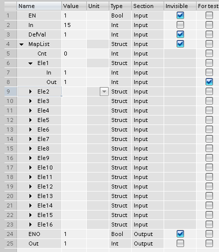

MS_MS：多状态-多状态转换
MS_MS (FB464) 块借助映射列表将多状态输入映射到多状态输出。
该块用于以下目的：
- To convert multiple multistate values to a predefined multistate value.
- To convert multistate values of a multistate text group to the same multistate values of another multistate text group.
功能性
该块在映射列表 [MapList] 中查找输入值 [In]。
If the input value [In] is entered in the mapping list [MapList] in a mapping record [MapRec(i).In], the associated multistate value [MapRec(i).Out] is issued at output [Out].
如果输入值 [In] 为not输入到映射列表 [MapList] 中，默认值 [DefVal] 在输出 [Out] 处发出。
输入
Pin | E | Description |
In | pa | 输入。 |
DefVal | pa | 默认值。 如果 [MapList] 中未输入 [In]，则替换 [Out] 的值。 |
MapList __Cnt __Ele1 __ __在 __ __出去 | 帕克斯 | 映射列表。 列表计数器（定义映射列表的大小。） 映射元素。 输入值。 产值 |
输出
Pin | E | Description |
Out | a | 输出。 |
输入值
Pin | Description | Data type | Default value | E.g. Engineering unit or Text group | Min. | Max. |
In | 输入。 | 多态 | 1（关） | 关闭...Stage15 | 1 | 16 |
DefVal | 默认值 | 多态 | 1（关） | 关闭...Stage15 | 1 | 16 |
MapList | 映射列表。 | 结构体 |
|
|
|
|
__Cnt | 列表大小 | 整数 | 0 |
|
|
|
__Ele[x] | 列表元素 | 结构体 |
|
|
|
|
____In |
| 整数 |
|
| 1 | 16 |
____Out |
| 整数 |
|
| 1 | 16 |
输出值
Pin | Description | Data type | Default value | E.g. Engineering unit or Text group | Min. | Max. |
Out | 输出。 | 多态 | 1（关） | 关闭...Stage15 | 1 | 16 |

过程响应
标准（参见General rules and information).
故障排除
如果输入值 [In] 为not输入到映射列表 [MapList] 中，默认值 [DefVal] 在输出 [Out] 处发出。
需要将 Cnt 调整为列表的正确长度。